要点まとめと問題
第1回 宅建業と免許・免許の基準
有料の教材「要点まとめと問題」（宅建業法）から、表紙・使い方と、第1回の18ページをそのまま載せています。
2027年度版の準備稿です。法令は2026年4月1日時点。2027年4月に照合し直します。
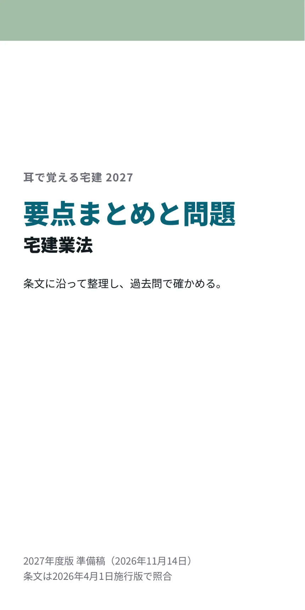
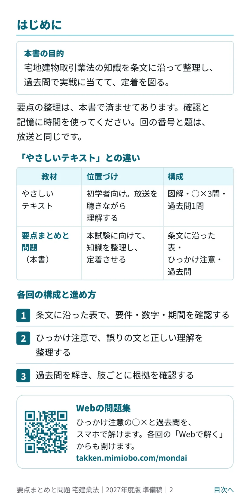
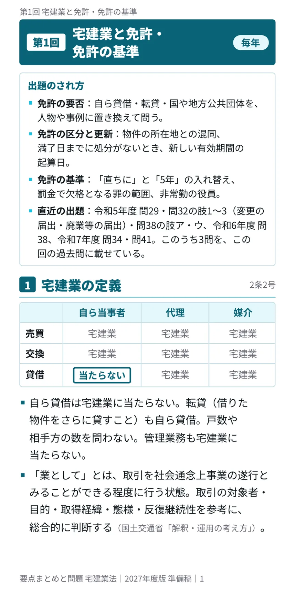
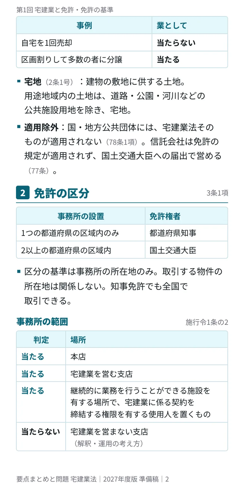
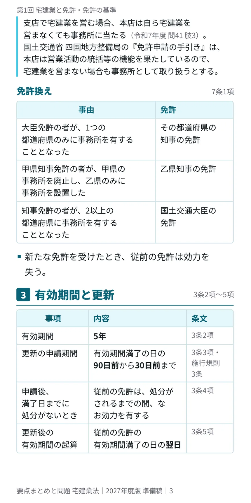
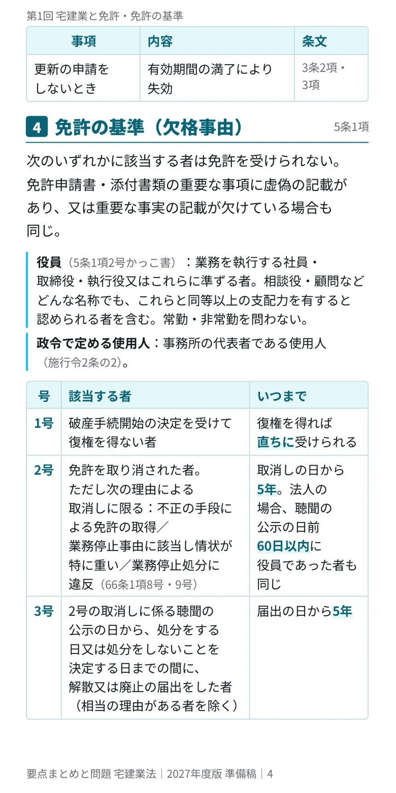
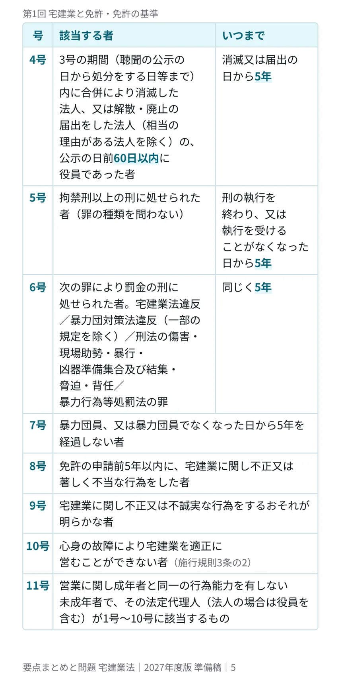
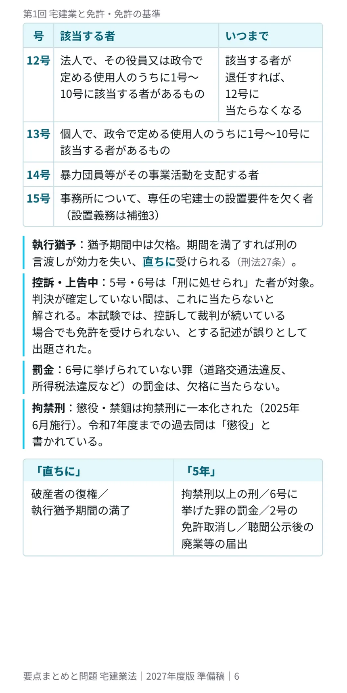
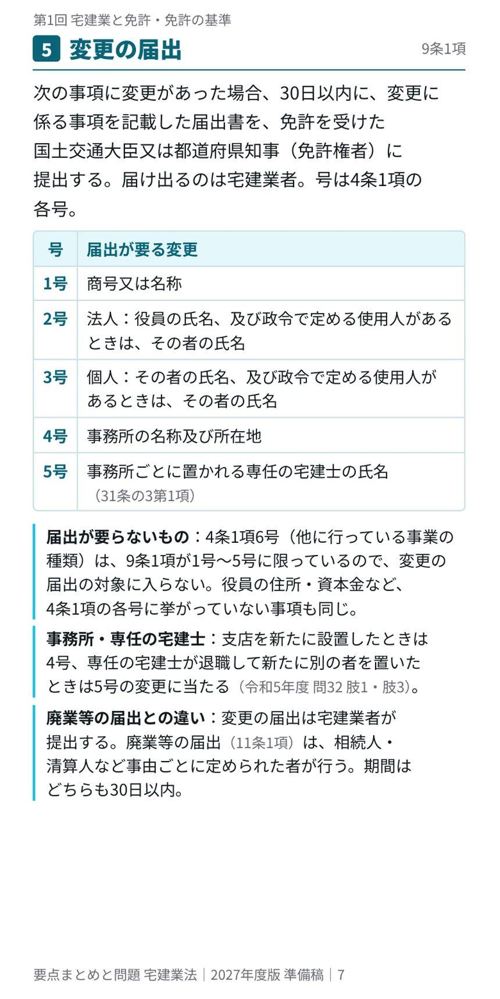
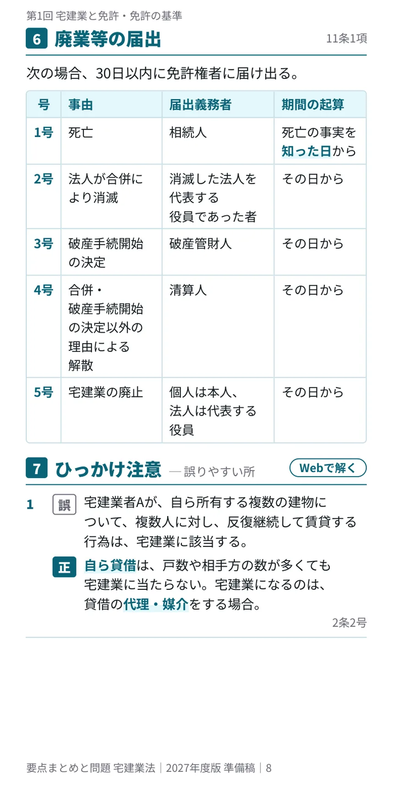
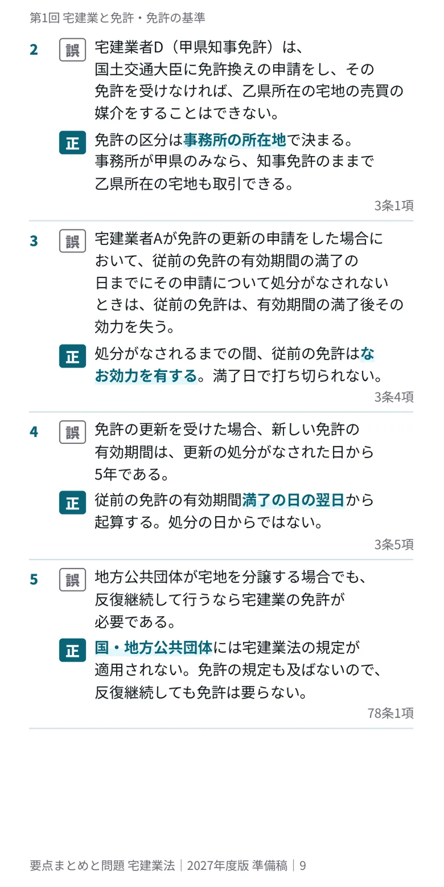
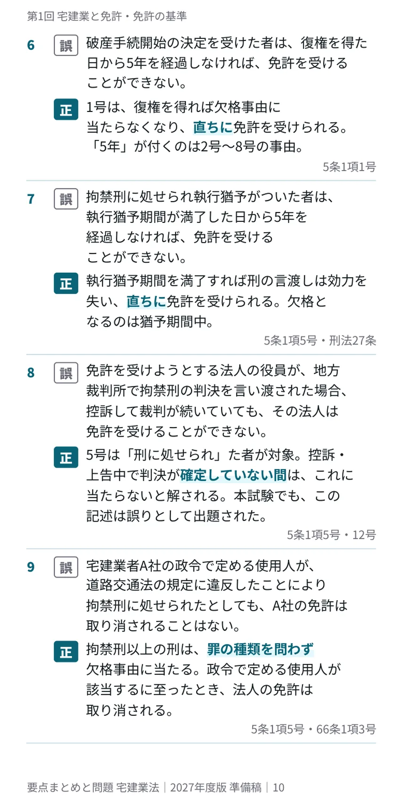
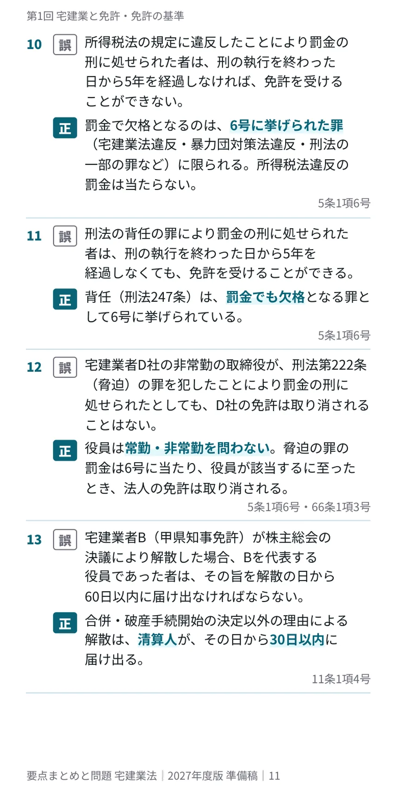
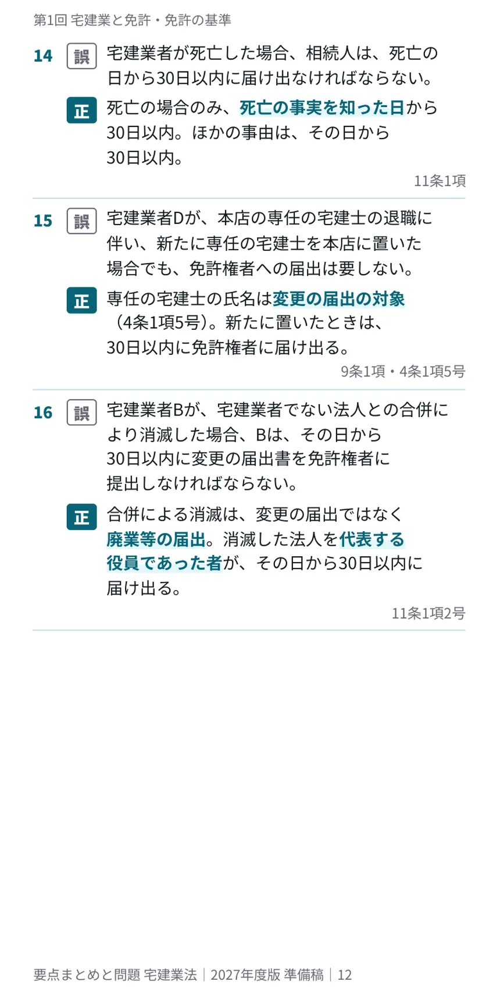
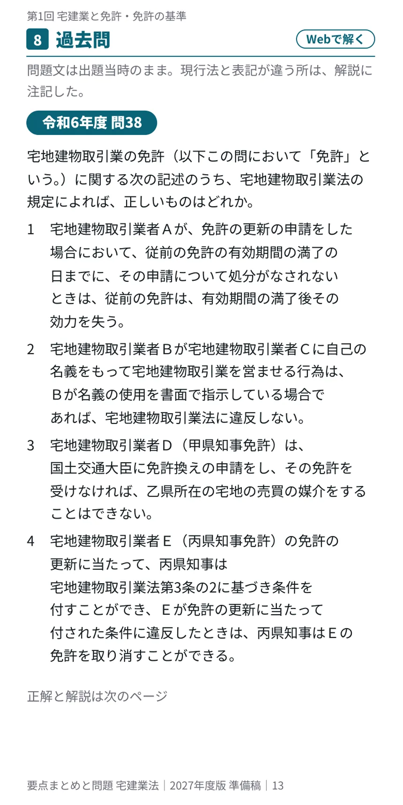
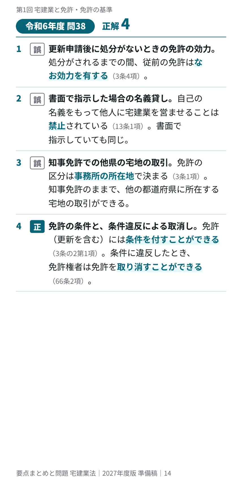
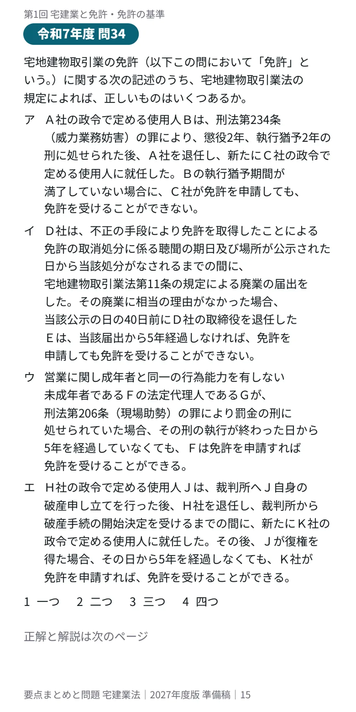
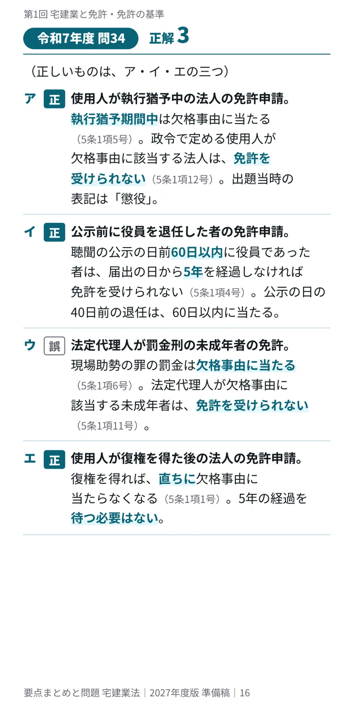
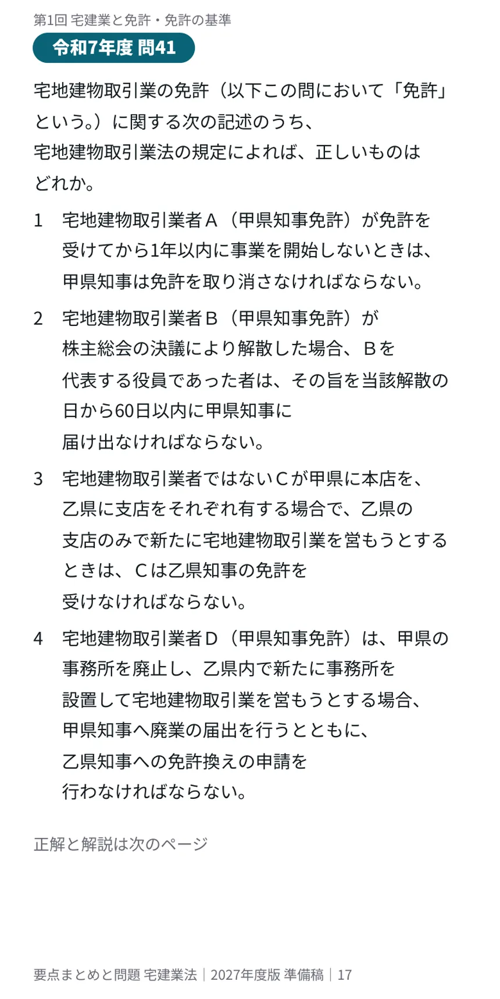
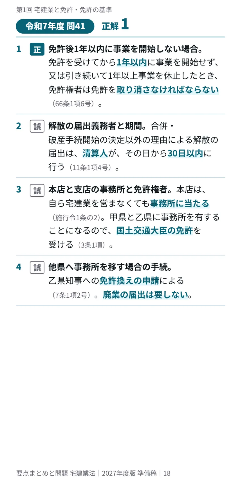
この教材について
「要点まとめと問題」は、宅建業法、権利関係、法令上の制限・税その他の3分野をまとめた3冊セットです。この見本は、宅建業法の第1回です。
あとから追加した分も、購入した方に届きます。
耳で覚える宅建 2027